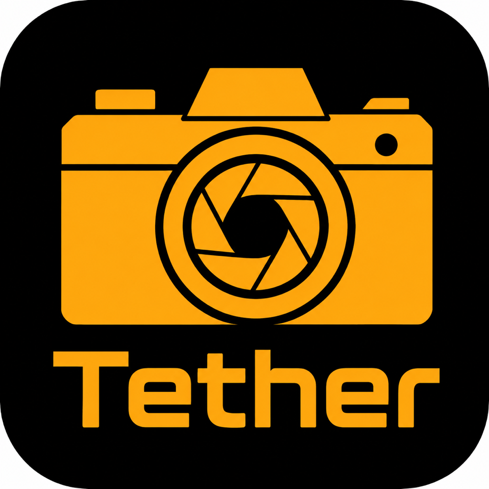

Sony α
カメラのPCリモートを有効にし、iPhone / iPadをカメラSSIDへ接続します。Sony直接Wi-Fiでは自動接続を試みます。アクセス認証が必要な機種では、カメラ画面のユーザー名、パスワード、フィンガープリントを確認してください。

TetherDrop Support
USB / Wi-Fi / FTPでカメラからJPEGを受信し、iPhone・iPadで確認と共有を行うテザー撮影アプリです。
TetherDropで接続できない、写真が受信されない、対応機種の挙動を共有したい場合は、以下の情報を添えてお問い合わせください。
ユーザー同士の情報交換やカメラ別の接続報告は GitHub Discussions をご利用ください。
カメラのPCリモートを有効にし、iPhone / iPadをカメラSSIDへ接続します。Sony直接Wi-Fiでは自動接続を試みます。アクセス認証が必要な機種では、カメラ画面のユーザー名、パスワード、フィンガープリントを確認してください。
USBではカメラのネットワーク機能をオフにし、対応機種では「USB接続アプリの選択」を「画像取り込み/リモート制御」にします。Wi-Fiでは、R1、R3、EOS R5 Mark II系は「スマートフォンとの接続」から「Camera Connect / 別の方法で接続」へ進み、カメラ本体のWi-Fiを選択してからアプリ内のCanonスマートフォン接続を使います。R6系は「EOS Utilityでリモート操作」からiOSに接続します。
Wi-Fiは「パソコンと接続」系のモードで検出します。USBはデータ転送対応ケーブルで接続すると自動検出されます。JPEG生成が重い設定では表示まで時間がかかる場合があります。
USBテザー撮影を使います。GFX系のWi-Fiテザー撮影には対応していません。RAW+JPEGでは機種ごとの挙動差が大きいため、安定運用ではJPEG設定を推奨します。
カメラ側のFTP転送機能からTetherDropへ送信できます。アプリに表示されるIPアドレス、ポート、ユーザー名、パスワードをカメラ側へ入力し、パッシブモードを使ってください。
充電専用ケーブルや品質の低いケーブルでは通信が不安定になります。別のデータ転送対応ケーブル、別のメモリーカード、カメラの電源入れ直しを試してください。
接続報告では、カメラ機種、ファームウェア、接続方法、iOS / iPadOS、エラー文を添えると解決しやすくなります。
最終更新日: 2026年7月7日
TetherDropは、カメラから受信したJPEGを端末内のアプリ用Documents領域に保存します。ユーザーが共有、写真ライブラリ保存、AirDropなどの操作を行わない限り、写真を外部サービスへ送信しません。
開発者は、TetherDrop内の写真、診断ログ、ローカル設定を第三者へ販売または共有しません。ユーザーが自分でAirDrop、共有シート、写真ライブラリ保存を選んだ場合は、選択した共有先のポリシーが適用されます。
TetherDropでサブスクリプションを提供する場合、購入と請求はAppleのApp内課金により処理されます。購入状態の確認、復元、サブスクリプション権限の管理のためにRevenueCatを使用する場合があります。これらのサービスに写真ファイル、レーティング、カラータグ、診断ログを送信することはありません。
サポート窓口は、アプリ公開時のApp StoreサポートURLまたはGitHubのIssues / Discussionsで案内します。
Last updated: July 7, 2026
TetherDrop saves JPEG files received from cameras into the app's Documents area on the device. Photos are not sent to external services unless the user explicitly shares them, saves them to Photos, or uses AirDrop or another system share destination.
The developer does not sell or share photos, diagnostic logs, or local settings stored by TetherDrop. If the user chooses AirDrop, the system share sheet, or saves to Photos, the selected destination's policy applies.
If TetherDrop offers subscriptions, purchases and billing are processed through Apple's In-App Purchase system. TetherDrop may use RevenueCat to check purchase status, restore purchases, and manage subscription entitlements. Photos, ratings, color tags, and diagnostic logs are not sent to these services.
最終更新日: 2026年7月8日
この利用規約は、TetherDropの利用条件を定めるものです。TetherDropをダウンロード、購入、または使用することで、本規約に同意したものとみなされます。
TetherDropは、対応カメラからUSB、Wi-Fi、FTPによりJPEGを受信し、iPhoneまたはiPad上で確認、選択、共有するためのアプリです。対応状況はカメラ機種、ファームウェア、ケーブル、ネットワーク環境、OSバージョンにより変わる場合があります。
機種変更、再インストール、または購入状態が反映されない場合は、アプリ内の「購入を復元」からサブスクリプション状態を再確認できます。
App Storeでの購入、請求、返金はAppleの規約と手続きに従って処理されます。返金が必要な場合はAppleの返金申請窓口をご利用ください。
重要な撮影では、事前に使用するカメラ、ケーブル、ネットワーク環境で受信テストを行ってください。通信環境、カメラ設定、端末の空き容量、バッテリー残量などにより、受信遅延や接続失敗が発生する場合があります。
TetherDropは現状有姿で提供されます。開発者は、アプリの利用により発生したデータ損失、撮影機会の損失、業務上の損害、間接損害について、法令で認められる範囲で責任を負いません。
TetherDropには、Appleの標準使用許諾契約が適用されます。詳細は Apple Standard EULA をご確認ください。
本規約またはTetherDropに関するお問い合わせは、このサポートサイトの案内に従ってご連絡ください。
Last updated: July 8, 2026
These Terms of Use govern your use of TetherDrop. By downloading, purchasing, or using TetherDrop, you agree to these terms.
TetherDrop is an app for receiving JPEG files from supported cameras over USB, Wi-Fi, or FTP, then reviewing, selecting, and sharing them on iPhone or iPad. Compatibility may vary depending on camera model, firmware, cable, network environment, and OS version.
If you change devices, reinstall the app, or your purchase status is not reflected, use Restore Purchases in the app to refresh your subscription status.
Purchases, billing, and refunds through the App Store are handled according to Apple's terms and processes. If you need a refund, please use Apple's refund request process.
Before an important shoot, test TetherDrop with the exact camera, cable, and network environment you plan to use. Transfer delays or connection failures may occur depending on communication conditions, camera settings, device storage, and battery level.
TetherDrop is provided as is. To the extent permitted by law, the developer is not responsible for data loss, missed shooting opportunities, business losses, or indirect damages arising from use of the app.
TetherDrop is subject to Apple's standard licensed application end user license agreement. See the Apple Standard EULA for details.
For questions about these terms or TetherDrop, please use the contact information provided on this support site.